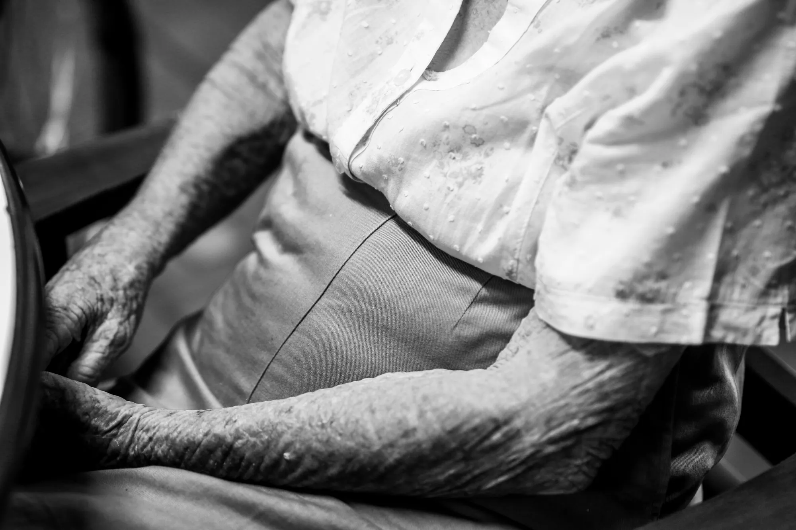
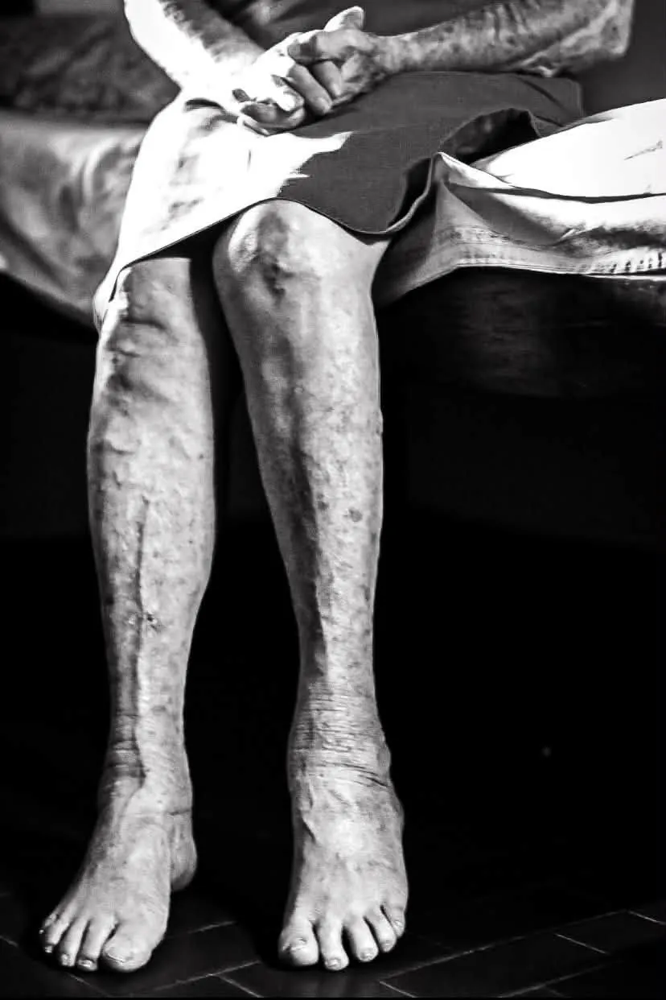
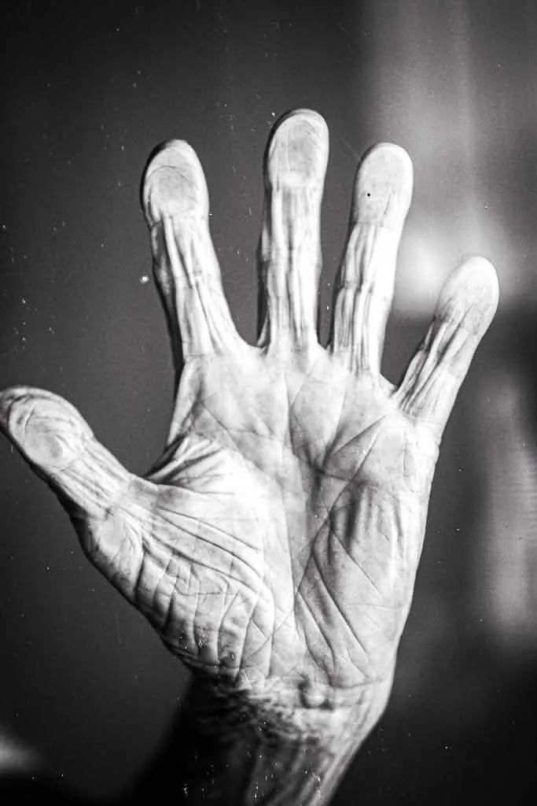
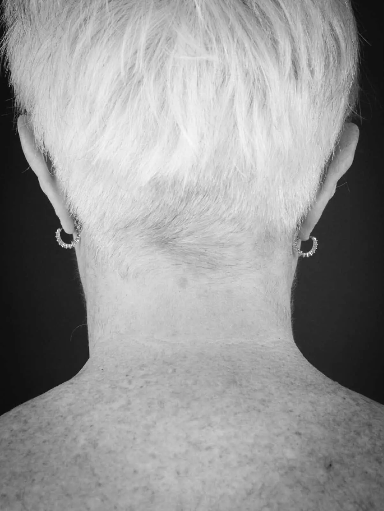

Arrugas
Arrugas es un ensayo fotográfico documental realizado en el Hogar Santa Marta de Eldorado, Misiones, que propone detener la mirada sobre la vejez, los cuerpos que envejecen y las memorias que permanecen inscriptas en la piel.
Me interesa pensar las arrugas no como marcas del deterioro, sino como archivos vivos de la existencia. Cada pliegue guarda una historia, un trabajo, una pérdida, un deseo, una forma de haber resistido al tiempo. En una sociedad que celebra obsesivamente la juventud y vuelve cada vez más invisibles a las personas mayores, fotografiar la vejez es también una decisión política.
Este trabajo busca cuestionar las representaciones que reducen a las personas mayores a la fragilidad, la dependencia o la nostalgia. No pretendo romantizar la vejez ni convertirla en objeto de contemplación, sino reconocer la dignidad, la singularidad y la autonomía de quienes continúan habitando el mundo con sus propias historias.
Arrugas es una invitación a mirar aquello que muchas veces elegimos no ver, a discutir el edadismo y a comprender que el paso del tiempo no nos quita identidad, sino que acumula experiencias que merecen ser escuchadas.
Porque una arruga no es una ausencia de juventud. Es la presencia irrepetible de una vida.
Obra disponible para la venta. Impresiones de autor, todos los tamaños, con o sin marco. Consultar por mail.






Obra
Seguir recorriendo